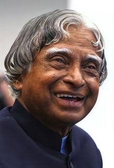

Space Programme
Contributed to India's space programme and worked with the Indian Space Research Organisation.
A TRIBUTE TO
The Missile Man of India and the People's President, remembered for his contribution to science, education and the dreams of young India.
Explore His Journey
ABOUT HIM
Dr. Avul Pakir Jainulabdeen Abdul Kalam was an Indian aerospace scientist and the 11th President of India. He played an important role in India's space and defence programmes.
Born on 15 October 1931 in Rameswaram, Tamil Nadu, Kalam came from a humble background and became one of India's most respected scientists and public figures.
Beyond science and technology, he was deeply connected with students and encouraged young people to dream, learn and contribute to the development of the nation.
HIS CONTRIBUTIONS
Contributed to India's space programme and worked with the Indian Space Research Organisation.
Played a major role in India's missile development programmes and became known as the "Missile Man of India."
Served as the 11th President of India from 2002 to 2007 and became widely known as the People's President.
He was awarded the Bharat Ratna, India's highest civilian award, in 1997.
HIS JOURNEY
Born on 15 October in Rameswaram, Tamil Nadu.
Became part of India's growing space research programme.
The SLV-III successfully placed the Rohini satellite into near-Earth orbit.
Received India's highest civilian honour.
Became the 11th President of India.
Passed away on 27 July while delivering a lecture to students in Shillong.
Dream, dream, dream. Dreams transform into thoughts and thoughts result in action.